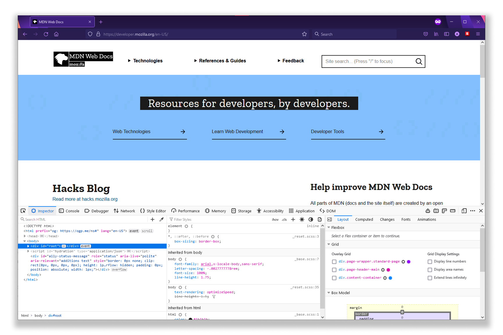
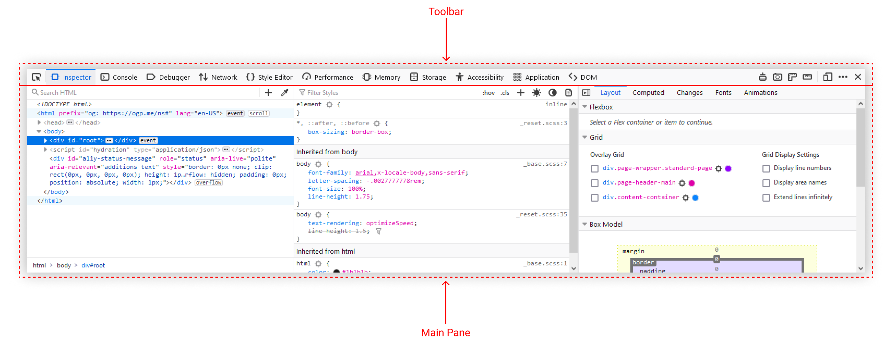
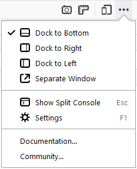
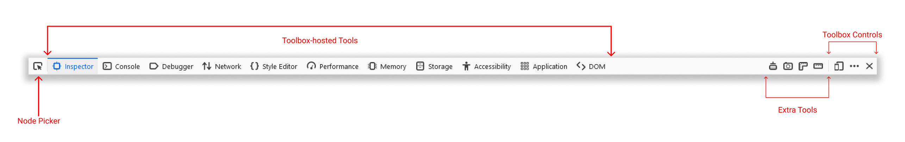

The Toolbox provides a single home for most of the developer tools that are built into Firefox.
There are three main ways to open the Toolbox:
By default, the window appears docked to the bottom side of the Firefox window, but you can detach it if you like. This is what it looks like when it's docked:
The window itself is split into two parts: a toolbar along the top, and a main pane underneath:

Since Firefox 62, you can drag and drop tabs in the main toolbar of the toolbox to reorder your tools as you wish ({{bug(1226272)}}).
By default, the Toolbox appears docked to the bottom of the browser window, but you can also dock it to the right-hand side of the window, or make it a standalone window, using buttons in the toolbar.

The toolbar contains controls to activate a particular tool, to dock/float the window, and to close the window.

On the far left there's a button to activate the node picker. This lets you select a page element for inspection. See "Selecting elements".
Then there is an array of labeled buttons which enables you to switch between the different tools hosted by the Toolbox. The array may include the following tools:
Note that not all the hosted tools are always listed here: only the tools actually available in this context are shown (for example, not all tools support remote debugging yet, so if the debugging target is not the Firefox instance that launched the window, not all the hosted tools will be shown).
Next there's an array of buttons that can be added or removed in the settings. None of these tools are enabled by default, but you can add them in the developer tools settings:
Finally there's a row of buttons to:
There's also a meatball menu button that consists of following options:
See the separate page on the Developer Tools Settings.
The content of the main pane in the window is entirely controlled by, and specific to, the hosted tool currently selected.
Toolbox shortcuts lists the shortcuts that work whenever the toolbox is open, no matter which tool is active. This same page also lists tool-specific keyboard shortcuts.